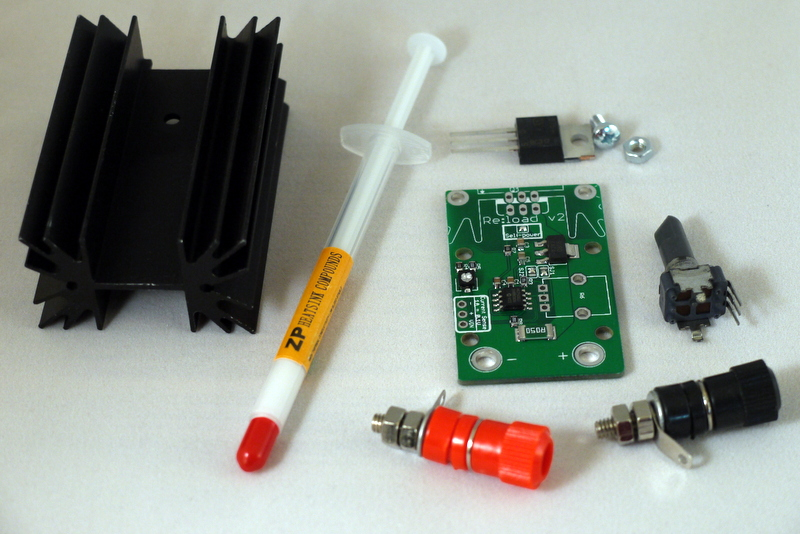

Re:load 2 assembly instructions
Parts list
The parts in your kit will depend on whether you have a regular Re:load or the “Epic” version. The list below shows the parts for both kits.
| Designation | Re:load Part | Epic Re:load part | Quantity |
|---|---|---|---|
| Re:load PCB | 1 | ||
| Q1 | BTS117 or BTS141 TO-220 MOSFET | BTS141 TO-220 MOSFET | 1 |
| 12 watt heatsink | 20 watt heatsink | 1 | |
| R6 | 10k ohm potentiometer | 1 | |
| JP1 | 1 pair binding posts | 1 | |
| Syringe of thermal paste | 1 | ||
| M3 6mm machine screw | 1 | ||
| M3 nut | 1 | ||
Assembly instructions
Re:load 2 comes with all surface mount parts already soldered, leaving only a few thru-hole parts to do to complete your kit. The contents of your kit should look something like this:

First, solder the potentiometer. It will take some wiggling to get the larger mounting pins through the holes. Normal orientation is with the potentiometer on the top side of the board, but if you’re using an enclosure that requires it, you can mount it on the bottom - just unsolder SJ1 and SJ2 and resolder them with the opposite pairs of pads connected.

Now for the transistor and the heatsink. It’s important to attach the transistor to the heatsink before adding either to the PCB.
First, take out the syringe of thermal paste. Apply it to the back of the transistor. You don’t need a thick coating, just enough to cover the whole part.
Then, line the transistor up against the heatsink so that the hole in the transistor is aligned with the middle hole on the heatsink. The legs should stick down so that the thicker part of the legs are entirely above the bottom of the heatsink. Otherwise, the transistor will not fit neatly on the board. Insert the provided screw and nut, and tighten finger-tight.

Now, insert the heatsink and the transistor into their holes on the PCB. When mounted on the standard heatsink, the FET goes into the set of holes closer to the front of the board. Some care will be needed to line everything up neatly. Once you have, solder the transistor and heatsink to the board. You will need a lot of heat and a fair bit of solder to solder the heatsink pins!

Finally, attach the screw terminals. Undo the nuts and throw away the solder lug, then put the terminals through the holes on the PCB and tighten the nuts. We recommend one nut above the PCB and one below.

Congratulations! You’ve built your Re:load! Now read on to calibrate and use it.
Calibration
The Re:load has two test pads near the front for reading off the instantaneous current. Because all components have some natural variation, calibration is required for this value to be accurate. The calibration procedure is simple, but if you don’t care about the accuracy of the current measurement, you can skip this.
- Attach the Re:load to a current source such as a bench supply, in series with a multimeter set to measure current. Take care to get the polarity on everything right!
- Turn on the power supply
- Adjust the Re:load’s potentiometer until the multimeter reads exactly 1 amp
- Remove the multimeter from the circuit and reconnect the Re:load. Configure the multimeter for voltage measurement.
- Attach the multimeter across the current sense test pads. Adjust the trimpot on the bottom of the board (not the big potentiometer!) until the multimeter reads exactly 0.1 volts.
Use
Using the Re:load is simple - if you followed the calibration procedure, you’ve already done it. Hook the Re:load up to a power source of at least 3.3 and no more than 40 volts. Re:load will attempt to draw a fixed amount of current; adjusting the potentiometer adjusts Re:load’s current draw.
In addition to current and voltage limits, Re:load has a maximum capacity to absorb energy. For the regular Re:load this is approximately 12 watts; the larger heatsink on the Epic increases this to approximately 20 watts. These values will vary depending on ambient temperature and airflow. Re:load can be run at powers significantly higher than these values, but it will eventually overheat, at which point the thermal cutoff in the transistor will activate, and it will stop drawing current until it is disconnected from the circuit and reconnected.
Re:load is very robust. The onboard regulator is protected against reverse polarity, but the transistor contains a body diode that will conduct current if connected backwards. As a result, Re:load will draw a lot of current when connected in reverse. This causes no problems for Re:load in the short term, but it’s possible it may overload your supply! In theory, if left connected in reverse for long enough, the temperature could rise sufficiently to damage the transistor, since the thermal cutoff won’t activate when reverse biased. So don’t do that. Re:load is also not rated for over 40 volts; above that the voltage regulator for the electronics may fail, causing the opamp to fail as well.
Re:load will operate below even 3.3 volts, but it will no longer operate as a constant current device, and its maximum current diminishes rapidly, down to nearly zero at approximately 2 volts.
You can also run Re:load from an external power supply. Simply unsolder the jumper marked “self-power”, and attach a power source of between 3.3 and 40 volts to the pads marked “VIN” and “-“. When running from an external supply, Re:load will operate over a range from 0 to 60 volts.
Re:load hacks
Have you done something cool and unusual with Re:load? I’d love to hear about it! Please email me and let me know!